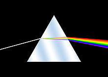

Pink Floyd est un groupe rock britannique originaire de Londres, en Angleterre. Le groupe a débuté avec un premier album de musique psychédélique pour ensuite bifurquer vers le rock progressif. Formé en 1965, il est considéré comme un pionnier et un représentant majeur de ces styles musicaux. Il est reconnu pour sa musique planante et expérimentale, ses textes philosophiques et satiriques, ses albums-concept et ses performances en concert originales et élaborées.
Initialement mené par le guitariste Syd Barrett, le groupe connaît un succès modeste au milieu des années 1960, puis devient l'un des groupes underground londoniens les plus populaires de la scène psychédélique.
En 1966, le groupe est constitué de Syd Barrett (guitare, chant, composition), Richard Wright (claviers), Roger Waters (basse) et Nick Mason (batterie et percussions). La formation commence à se produire dans la région de Cambridge. Pendant ce temps, David Gilmour joue en France au sein des Flowers. L'un des noms originaux du groupe, Tea Set, est abandonné après que le groupe s'est trouéé à l'affiche avec un autre groupe du même nom. Barrett propose sur le coup un nouveau nom, The Pink Floyd Sound, une référence à deux musiciens de blues, Pink Anderson et Floyd Council.
Contrairement à une idée reçue francaise persistante, Pink Floyd ne signifie donc pas "flamant rose", "flamant" se traduisant en anglais par "flamingo".
Cependant, le comportement de plus en plus instable de Barrett (principalement dû à son importante consommation de LSD), conduit les autres membres à le remplacer par David Gilmour, un ami d'enfance de Barrett.
En 1969, Pink Floyd se trouve privé de son leader. L'enjeu est alors important : le groupe doit se refaire une identité, en gardant la paternité de Syd Barrett tout en renouvelant son répertoire. A partir de ce moment, Roger Waters va graduellement prendre de plus en plus d'importance dans le groupe, en termes de direction créatrice, ultimement jusqu'à ne considérer le groupe que comme un simple exécutant de ses compositions, dans The Final Cut.
C'est le 23 mars 1973 que sort The Dark Side of the Moon, qui, avec les trois albums suivants, Wish You Were Here, Animals et The Wall, forme une suite d'albums souvent considérés comme les plus aboutis de la carrière de Pink Floyd. David Gilmour réfute les accusations de tentation commerciale lorsque l'album The Dark Side of the Moon connaît un succès massif en 1973, notamment grâce au titre Money. L'albums The Wall donnera lieu à une adaptation cinématographique. Mais des tensions dans le groupe apparaissent au fil du temps. Pendant la tournée de The Wall, le claviériste Richard Wright est exclu partiellement du groupe (Wright démissionnera après la tournée) par Roger Waters, qui en prend entièrement le contrôle. Après un album, The Final Cut (1983), dont il est l'unique auteur, Waters quitte le groupe en 1985. En 1987, David Gilmour et Nick Mason, les membres restants, décident d'enregistrer un nouvel album sans Waters et en réintègrant Richard Wright sur l'album A Momentary Lapse of Reason (1987) puis sur The Division Bell (1994) tout en recommencant à se produire en concert, puis le groupe met ses activités en sommeil en 1996.
En 2005, les trois membres de groupes, David Gilmour, Nick Mason, et Richard Wright rejoignent Roger Waters à l'occasion d'un dernier concert à Hyde Park à Londres. Avant d'entamer Wish You Were Here, Roger rend hommage à son ami d'enfance Syd Barrett en ces termes : "C'est un moment émouvant, debout ici avec ces trois gars, après toutes ces années. Debout avec vous tous. Quoi qu'il en soit, nous le faisons pour ceux qui ne sont pas là, en particulier pour Syd, bien sûr.". Le nombre de spectateurs de ce concert des Pink Floyd est estimé à trois millions. Durant la semaine qui suivit, les albums du groupe connaissent un regain de vente : selon la chaîne de magasins HMV les ventes d'Echoes: The Best of Pink Floyd ont crû de 1 343 %, et Amazon indique que les ventes de The Wall ont augmenté de 3 600 %, celles de Wish You Were Here de 2 000 %, celles de The Dark Side of the Moon de 1 400 % et celles de Animals de 1 000 %.